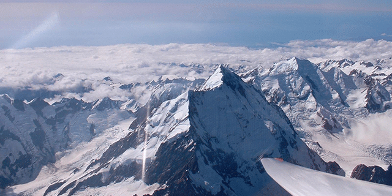
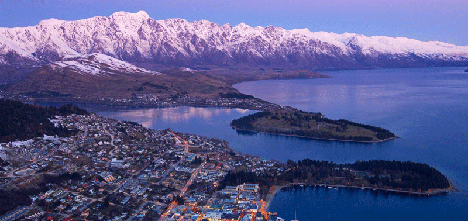
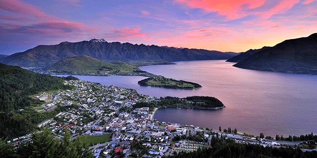
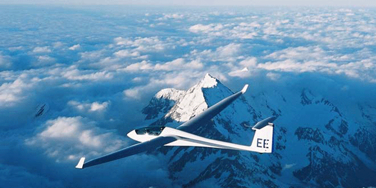

- 
- 
- 
- 
Scenic Flights
Enjoy the best of our breathtaking regions from the air.
- Queenstown and Wanaka
1 hour photographic highlights - Queenstown and Wanaka
2 hour photographic highlights - Queenstown, Wanaka and Mount Cook / Aoraki premium
- Queenstown, Wanaka and Mount Cook / Aoraki sunset exceptional
- Custom aerial photography flights by the hour, day or week
– contact us to discuss your requirements
Fixed wing $350 per hour per passenger
Helicopter $350 per hour per passenger
Glider flights also available! Just for a moment, imagine the serenity of gliding above some of the most spectacular landscape in the world. We can make that happen.
- Queenstown and Wanaka 3 hour
- Queenstown and Wanaka 4 hour
- Mount Cook / Aoraki 4 hour
- Custom by arrangement
Glider $1,200 per hour, one person per flight
Book Now Back to Flights